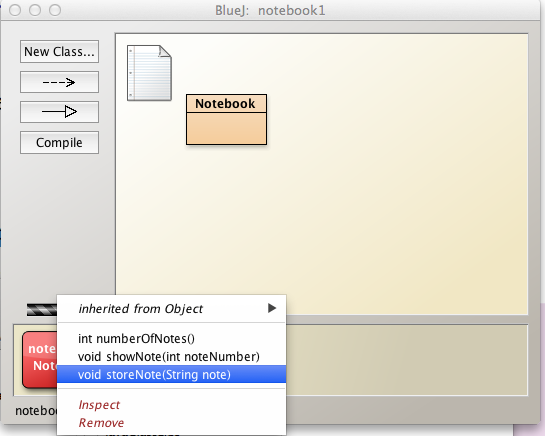
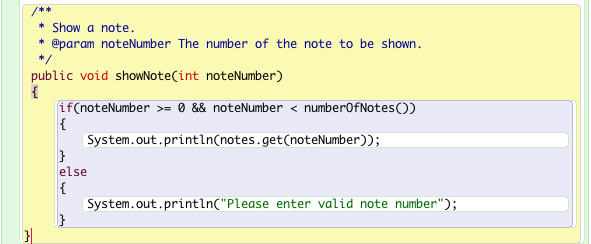
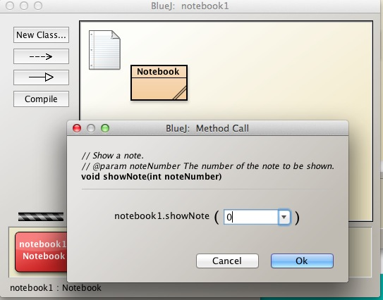
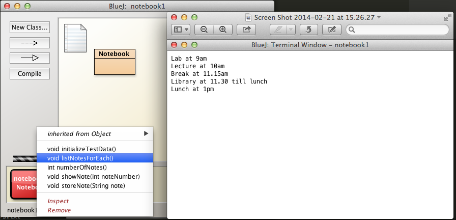
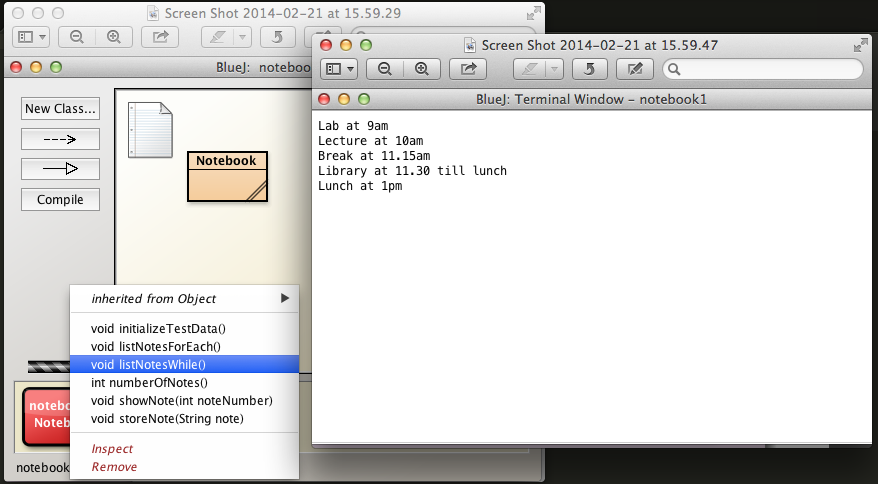

Objectives
Use BlueJ Notebook class to gain basic experience with the ArrayList collection class. Explore some of its methods by generating and manipulating test data. Gain experience in looping using for, enhanced for, while, do-while and iterators.
Notebook project
Download the BlueJ examples chapter04 available here into workspaceBlueJ/blueJ folder and uncompress.
Check your directory structure correct:
workspaceBlueJ/blueJ/chapter04
Launch BlueJ and open the project notebook1
Select Notebook in the BlueJ: notebook1 window, right click and open the editor to view the source code. See Figure 1

Here, without comments, is the code:
public class Notebook
{
private ArrayList<String> notes;
public Notebook()
{
notes = new ArrayList<String>();
}
public void storeNote(String note)
{
notes.add(note);
}
public int numberOfNotes()
{
return notes.size();
}
public void showNote(int noteNumber)
{
if(noteNumber < 0)
{
}
else if(noteNumber < numberOfNotes()) {
System.out.println(notes.get(noteNumber));
}
else
{
}
}
}In the following steps we shall discuss the key statements in this code
Notebook source code
import java.util.ArrayList;Makes the ArrayList class available.
The ArrayList class is a member of the Java package java.util.
public class Notebook
{
}This is the outer wrapper for the Notebook class. It is declared public so that it has global visibility, i.e. there is no restriction on who can use the class.
Declares a private variable notes.
private ArrayList<String> notes;private means the variable is visible only within the Notebook object in which the variable was created.
ArrayList
public Notebook()
{
}This is the Notebook default constructor.
The constructor is declared public and is thus globally accessible.
Within the constructor, the notes Array list is instantiated:
public Notebook()
{
notes = new ArrayList<String>();
}Since Java 7, this may also been written as:
notes = new ArrayList<>();The public method
public void storeNote(String note)
{
notes.add(note);
}adds a new note to the notes array.
The new note is made available as an actual parameter (String note) and added to the notes instance variable using the ArrayList method add.
This ArrayList method add is one of three used in the present Notes source code.
The other two are size and get that return the number of elements in an ArrayList and a specific element, respectively.
We can disover the number of notes in the array by invoking the method numberOfNotes
public int numberOfNotes()
{
return notes.size();
}This method invokes the ArrayList method size which returns the number of elements in the array and this number is in turn returned back to the caller of the method as an integer value by numberOfNotes.
The final method prints a specific note (an element of the notes variable) to the output window:
public void showNote(int noteNumber)
{
if(noteNumber < 0)
{
//Invalid note number: do nothing
}
else if(noteNumber < numberOfNotes())
{
System.out.println(notes.get(noteNumber));
}
else
{
//Invalid note number: do nothing
}
}We will refactor this method later in the lab.
Adding elements to ArrayList
Create a new Notebook object named notebook1 on the BlueJ workbench.
Select the object and from the drop-down menu invoke storeNote (Figure 1).

Add a note "Lab at 9am".
Check that the note has been saved to the array by invoking showNote using 0 as the actual parameter (Figure 2 and Figure 3).


The note should be displayed as illustrated in Figure 4.

Add the following notes in order:
"Lecture at 10am"
"Break at 11.15am"
"Library at 11.30 till lunch"
"Lunch at 1pm"
Now verify the number of notes saved to date is correct by invoking numberOfNotes (Figure 5 and Figure 6).

Accessing ArrayList element
We shall now refactor the showNote method. Here it is again:
public void showNote(int noteNumber)
{
if(noteNumber < 0)
{
}
else if(noteNumber < numberOfNotes())
{
System.out.println(notes.get(noteNumber));
}
else
{
}
}Here are the first and third code blocks from the above with added comments:
/*
* The note number cannot be less than zero
*/
if(noteNumber < 0)
{
}and
/*
* This block routes execution code where the note number is
* neither less than zero nor less than the number of notes.
* In other words, the note number is either equal or greater than the number of notes.
*/
else
{
}What this long-winded code is attempting to ensure is that only a valid note number is processed.
Since a valid note number range is between zero and the number of notes -1, we can refactor this code as follows:
public void showNote(int noteNumber)
{
if(noteNumber >= 0 && noteNumber < numberOfNotes())
{
System.out.println(notes.get(noteNumber));
}
else
{
System.out.println("Please enter valid note number");
}
}Open the Notebook source code as before and substitute this refactored method for the existing (Figure 1).

Compile the project and test the method by entering, first valid data (e.g. 0) and then invalid data (e.g. 100).
For example, see Figure 2 where valid data (0) is being input.

See Figure 3 for an outcome of entering an invalid note number.

Initializing ArrayList
Each time we compile the project, all objects are removed from the object bench and any data we might have entered, such as the notes in an earlier step, would be lost.
To avoid the tedious repetition of rentering data following each recompilation,we shall write a simple method to programmatically initialise the notes collection.
Here is the code:
public void initializeTestData()
{
notes = new ArrayList<String>() {{
add("lab at 9am");
add("Lecture at 10am");
add("Break at 11.15am");
add("Library at 11.30 till lunch");
add("Lunch at 1pm");
}};
}This code is shorhand for
public void initializeTestData()
{
notes = new ArrayList<String>();
notes.add("lab at 9am");
notes.add("Lecture at 10am");
notes.add("Break at 11.15am");
notes.add("Library at 11.30 till lunch");
notes.add("Lunch at 1pm");
}Now, following recompilation and creation of a new Notebook object, we can invoke this method to restore data in the notes instance variable.
Open the source code for Notebook in the editor and insert this method immediately following the constructor.
The location for the code is not relevent to the running of the program but placing it following the constructor is a reasonable decision.
Compile the code.
Create a new Notebook object.
Test the initializeTestData method by
- Invoking this newly written method initializeTestData.
- invoking numberOfNotes and verifying the number is 5.
- invoking the showNote method with note numbers from 0 to 4 and verifying the notes are correct.
Access ArrayList using for-each
Here is the general format of the for-each statement:
for(Object o : collection)
{
statement(s)
}Object o is an element of the collection in question.
For example in the case of ArrayList
ArrayList<Object> collection Object o
ArrayList<String> notes String noteHere, then, is a method to list all the elements of notes using a for-each loop.
public void listNotesForEach()
{
for(String note: notes)
{
System.out.println(note);
}
}Our choice of method name, listNotesForEach is made because we will shortly be writing methods to achieve the same goal but using different looping techniques. This approach is being adopted in this, an educational, environment. In a commercial environment one would likely use one looping method and name the method something along the lines of listNotes or listAllNotes without giving any indication of how the method is implemented.
To implement and test this method:
- Open the Notebook editor
- Add this code for listNodesForEach at the end of the Notebook source.
- Compile and execute this new method.
- Invoke the initializeTestData to recreate the sample notes.
You should generate output as shwon in Figure 1.

Access ArrayList using while
Here is the general format of the while statement:
while (expression)
{
statement(s)
}Here is a method to list all the elements of notes using a while loop.
public void listNotesWhile()
{
int index = 0;
while(index < notes.size())
{
System.out.println(notes.get(index));
index = index + 1;
}
}To implement and test this method follow steps similar to those for the method listNotesForEach:
- Open the Notebook editor
- Add this code for listNodesWhile at the end of the Notebook source.
- Compile and execute this new method.
- Invoke the initializeTestData to recreate the sample notes.
You should generate output similar to that shown in in Figure 1.

Access ArrayList using Iterator
Here is the general format of the source required to use an iterator over a collection:
ArrayList<Object> collection;
Iterator<Object> it = collection.iterator();
while(it.hasNext())
{
Object o = it.next();
}Object o is an element of the collection in question.
For example in the case of ArrayList
ArrayList<Object> collection Object o
ArrayList<String> notes String noteHere is a method to list all the elements of notes by iterating over the collection:
//Insert this statement at the top of the source code file
import java.util.Iterator;
//Here is the method code
public void listNotesIterator()
{
Iterator<String> it = notes.iterator();
while(it.hasNext())
{
System.out.println(it.next());
}
}To implement and test this method follow steps similar to those for the method listNotesForEach:
- Open the Notebook editor
- Add this code for listNodesIterator at the end of the Notebook source.
- Compile and execute this new method.
- Invoke the initializeTestData to recreate the sample notes.
You should generate output similar to that shown in in Figure 1.

Method to search Notebook object for specific string occurrence
We will name the method search and give it the following header:
public boolean search(String searchString)The method
- Searches for the first occurrence of the String searchString.
- On the first occurrence of searchString, the method immediately returns true.
- If the string is not found, the method returns false.
Here is the code:
public boolean search(String searchString)
{
Iterator<String> it = notes.iterator();
while (it.hasNext())
{
String string = it.next();
if (string.contains(searchString))
{
return true;
}
}
return false;
}Observe that we are using the contains method that is a member of the String class: contains, essentially, returns true if and only if the string contains the specified searchString.
For example: - If we search for "Lab" in notes then the method will return true because "Lab" is a substring of the first note "Lab at 9am" - However, a search for "Lab at 9am in 4A" will return false. The entire search string must be contained, not just part of it.
To implement and test this method follow steps similar to those for the method listNotesForEach:
- Open the Notebook editor
- Add this code for searchString at the end of the Notebook source.
- Compile and execute this new method.
- Invoke the initializeTestData to recreate the sample notes.
- Search for the string "Lab" by invoking searchString.
- The boolean true should be returned.
- The outcome should be as illustrated in Figure 1.
You should generate output similar to that shown in in Figure 1.

Remove elements from Notebook ArrayList
Remove individual element
We shall first write a method to remove an individual element from the Notebook field notes followed by a method to remove all the elements.
public void remove(int index)
{
if(index >= 0 && index < notes.size())
{
notes.remove(index);
}
else
{
System.out.println("You requested removal of a non-existant note. Please enter a valid index");
}
}Initializing the Notebook object with the standard test data, test the method by entering
- A valid index, such as 0.
- Check the number of elements using numberOfNotes.
- List all the elements using, for example, listNotesForEach, and verify correct.
- An invalid index such as 10.
- You should receive a warning message.
- Nevertheless you should:
- Check the number of elements using *numberOfNotes*. - List all the elements using, for example, *listNotesForEach*, and verify correct.
Remove all elements
public void removeAll()
{
notes.clear();
}Initializing the Notebook object with the standard test data, test the method by
- Invoke the removeAll method
- Check the number of elements using numberOfNotes which should zero.
- List all the elements using, for example, listNotesForEach, and verify there is none.
You should generate output similar to that shown in in Figure 1.

Exercises
Exercise 1
Write a method listNotesFor to process all the elements in the ArrayList of notes in the Notebook class and print all the notes.
Test the method by:
- Adding the method to Notebook source code.
- Compiling the source.
- Creating a Notebook object.
- Initializing, using method such as initializeTestData, with sample data.
- Invoking listNotesFor and verifying the correctness of the output.
Exercise 2
Write a Notebook method public boolean searchWhile(String searchString) similar in effect to that written earlier in the lab but using a while loop to process the array of notes.
Test the method by:
- Adding the method to Notebook source code.
- Compiling the source.
- Creating a Notebook object.
- Initializing with sample data using a method such as initializeTestData.
- Searching for the presence of a string that exists in the sample data and observing the result.
- Searching for the presence of a string that does not exist in the sample data and observing the result.
Exercise 3
Write a Notebook method public boolean searchForEach(String searchString) similar in effect to that written earlier in the lab but using a for-each loop to process the array of notes.
Test the method by:
- Adding the method to Notebook source code.
- Compiling the source.
- Creating a Notebook object.
- Initializing with sample data using a method such as initializeTestData.
- Searching for the presence of a string that exists in the sample data and observing the result.
- Searching for the presence of a string that does not exist in the sample data and observing the result.
Shop project (from lectures)
In your workspace folder, create a new project called Shop. This project will be a menu-driven system that will manage a collection of products for a store.
Product class
- Create a new class called Product.
- Copy this code into your class (remember we wrote this code in a previous lab). The Javadoc comments will provide some information for you about this class.
/**
* Represents a Product. Stores the product name, product code,
* unitCost and whether the product is in the current product
* line or not.
*
* @author Siobhan Drohan
* @version 1.0 (25th Jan 2017)
*/
public class Product
{
//instance fields
private String productName;
private int productCode;
private double unitCost;
private boolean inCurrentProductLine;
/**
* Constructor for objects of class Product
*
* @param productName Name of the product
* @param productCode Code of the product (between 1000 and 9999)
* @param unitCost Unit cost of the product (greater than zero)
* @param inCurrentProductLine indicates whether the
* product is in the current product line or not
*/
public Product(String productName, int productCode,
double unitCost, boolean inCurrentProductLine){
this.productName = productName;
if ((productCode >= 1000) && (productCode <= 9999)){
this.productCode = productCode;
}
else{
this.productCode = 1;
}
if (unitCost > 0){
this.unitCost = unitCost;
}
else{
this.unitCost = 0;
}
this.inCurrentProductLine = inCurrentProductLine;
}
//-------
//getters
//-------
/**
* Returns the product name for the specified object
*
* @return The Product Name
*/
public String getProductName(){
return productName;
}
/**
* Returns the unit cost for the specified object
*
* @return The Unit Cost
*/
public double getUnitCost(){
return unitCost;
}
/**
* Returns the product code for the specified object
*
* @return The Product Code
*/
public int getProductCode() {
return productCode;
}
/**
* Returns a boolean indicating if the product is in
* the current product line
*
* @return Is the product in the current product line
*/
public boolean isInCurrentProductLine() {
return inCurrentProductLine;
}
//-------
//setters
//-------
/**
* Updates the Product Code to the value passed as
* a parameter (must be between 1000 and 9999).
*
* @param productCode The new Product Code
*/
public void setProductCode(int productCode) {
if ((productCode >= 1000) && (productCode <= 9999)){
this.productCode = productCode;
}
else{
System.out.println("Product code is not between 1000 and 9999."
+ " You entered: " + productCode);
}
}
/**
* Updates the Product Name to the value passed as a parameter
*
* @param productName The new Product Name
*/
public void setProductName(String productName) {
this.productName = productName;
}
/**
* Updates the Unit Cost to the value passed as a
* parameter (must be greater than zero).
*
* @param unitCost The new unit cost for the product
*/
public void setUnitCost(double unitCost) {
if (unitCost > 0){
this.unitCost = unitCost;
}
else{
System.out.println("Unit cost must be greater than zero.");
}
}
/**
* Updates the boolean indicating whether the product
* is in the current product line or not.
*
* @param inCurrentProductLine Indicator that determines if
* the product is in the current product line or not.
*/
public void setInCurrentProductLine(boolean inCurrentProductLine) {
this.inCurrentProductLine = inCurrentProductLine;
}
/**
* Returns a user-friendly string representation of the Product object
*
* @return User-friendly String representing the current Product
*/
public String toString(){
return "Product: " + productName
+ "(code: " + productCode + ")"
+ ". Unit cost: " + unitCost
+ ". In current product line: " + inCurrentProductLine;
}
}- Test the methods in this class by creating an object of type Product and testing that each method behaves as it should.
Store class
In the real-world, a store holds many products; we will mimic this one-many relationship in project now.
In the Shop project, create a new class called Store and add the following to it:
import java.util.ArrayList;
Create two private instance fields:
- storeLocation; of type String
- products; an ArrayList of Products
Write a constructor for this class that takes one parameter, storeLocation. This parameter will be used to setup the corresponding instance field. The products instance field will also be instantiated in this constructor.
Write a getter and a setter for both of the instance variables above.
Write a size method that takes no parameters and returns an int. The int returned represents the number of products currently stored in the ArrayList products.
Write an add method that takes one parameter (an Object of type Product) and returns a boolean value. This method adds the product, passed as a parameter, to the products ArrayList.
Write a listProducts method that takes no parameter and returns a String containing all products stored in the products ArrayList. If there are no products in the ArrayList, return a String stating "No products". Note: choose any type of loop you fancy here but you must print the index number with each product.
Write a remove method that takes one parameter (an int representing the index of the product you want to delete) and has a void return type. This method removes the product, at the specified index, from the products ArrayList. Ensure that you validate the index in this method i.e. between 0 (inclusive) and size (exclusive).
Write a get method that takes one parameter (an int representing the index of the product you want to retrieve) and has a return type of Product. This method retrieves the product, at the specified index, from the products ArrayList. Ensure that you validate the index in this method i.e. between 0 (inclusive) and size (exclusive).
Write a cheapestProduct method that takes no parameters and has a return type of String. If there are no products in the ArrayList, return a String stating "No products". If there are products in the ArrayList, return the productName that is the cheapest (note: you may need to refer to your lecture notes for the algorithm here).
Write a toString method that takes no parameters and has a return type of String. This string should contain the store location as well as a list of all products in the store.
Test Store Class
- Create four product objects.
- Add each product object to the products ArrayList.
- Call the size method; it shoud tell you that four products are currently in the ArrayList.
- Call the getter methods and ensure that you are returned the correct data.
- Call the setter method for the storeLocation field and update the location to a String of your choice.
- Call the listProducts method. The four prodcuts should be printed to the console.
- Call the remove method, passing 1 as a parameter. Test that the second product was deleted from your ArrayList by listing all the products. Test that the size of the ArrayList is now three. Also boundary test the passed index i.e. test with an index less than zero and an index equal to the size of the ArrayList.
- Call the get method, passing 1 as a parameter. Test that the second product was retrieved from your ArrayList. Also boundary test the passed index i.e. test with an index less than zero and an index equal to the size of the ArrayList.
- Call the cheapestProduct method and ensure that the name of the cheapest product has been returned.
- Call the toString method and ensure that the name of the store and it's products are returned.
MenuController
In the Shop project, create a new class called MenuController and add the following to it:
import java.util.Scanner;
Create two private instance fields:
- input; of type Scanner
- store; of type Store
Write a constructor for this class that takes no parameters. The input instance field should be instantiated in this constructor. The constructor also asks the user to enter the store location and uses this information to instantiate the store instance field. Also the runMenu method should be invoked from here.
Write a private mainMenu method that takes no parameters and prints the menu below to the console. This method has a return type of int, which is contains the user's menu choice that they entered on the console.
- Write a private runMenu method that takes no parameters and has a void return type. This method's responsibility is to repeatedly display the main menu to the user, while also processing their menu choice. If you need help with this method, please see the figure just below:

- Write a private addProduct method that takes no parameters and has a void return type. This method reads the product information from the user and uses it to construct an object of type product. This project object is then passed to the store to add to it's ArrayList of products.
Test MenuController Class
- Start the Shop App by right clicking on the MenuController class and calling its constructor.
- Enter a shop location (two words at least).
Call each menu option in turn and test different combinations in an effort to locate bugs e.g.
- test all options when no products exist
- try to delete a product that doesn't exist
- after successfully deleting a product, list the products to make sure it is gone
- and so on....
If you find any bugs, return to the code and try to fix them. Remember, your debugger might come in handy if you have difficult to fix bugs.
Solution
The solution to this exercise is here.